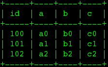

SELECT * FROM SYSADMIN.UsageSYSADMIN Schema
System schema for administrative information and actions.
Table of Contents
Tables/Views
SYSADMIN.Usage
This table supplies information about how views / procedures are defined.
| Column Name | Type | Description |
|---|---|---|
VDBName |
string |
VDB name |
UID |
string |
Object UID |
object_type |
string |
Type of object (StoredProcedure, ForeignProcedure, Table, View, Column, etc.) |
Name |
string |
Object Name or parent name |
ElementName |
string |
Name of column or parameter, may be null to indicate a table/procedure. Parameter level dependencies are currently not implemented. |
Uses_UID |
string |
Used object UID |
Uses_object_type |
string |
Used object type |
Uses_SchemaName |
string |
Used object schema |
Uses_Name |
string |
Used object name or parent name |
Uses_ElementName |
string |
Used column or parameter name, may be null to indicate a table/procedure level dependency |
Every column, parameter, table, or procedure referenced in a procedure or view definition will be shown as used. Likewise every column, parameter, table, or procedure referenced in the expression that defines a view column will be shown as used by that column. No dependency information is yet shown for procedure result set columns.
Example SYSADMIN.Usage
Recursive common table queries can be used to determine transitive relationships.
Example Finding All Incoming Usage
with im_using as (
select 0 as level, uid, Uses_UID, Uses_Name, Uses_Object_Type, Uses_ElementName
from usage where uid = (select uid from sys.tables where name='table name' and schemaName='schema name')
union all
select level + 1, usage.uid, usage.Uses_UID, usage.Uses_Name, usage.Uses_Object_Type, usage.Uses_ElementName
from usage, im_using where level < 10 and usage.uid = im_using.Uses_UID) select * from im_usingExample Finding All Outgoing Usage
with uses_me as (
select 0 as level, uid, Uses_UID, Name, Object_Type, ElementName
from usage where uses_uid = (select uid from sys.tables where name='table name' and schemaName='schema name')
union all
select level + 1, usage.uid, usage.Uses_UID, usage.Name, usage.Object_Type, usage.ElementName
from usage, uses_me where level < 10 and usage.uses_uid = uses_me.UID) select * from uses_meSYSADMIN.MatViews
This table supplies information about all the materailized views in the virtual database.
| Column Name | Type | Description |
|---|---|---|
VDBName |
string |
VDB name |
SchemaName |
string |
Schema Name |
Name |
string |
Short group name |
TargetSchemaName |
string |
Name of the materialized table schema. Will be null for internal materialization. |
TargetName |
string |
Name of the materialized table |
Valid |
boolean |
True if materialized table is currently valid. Will be null for external materialization. |
LoadState |
boolean |
The load state, can be one of NEEDS_LOADING, LOADING, LOADED, FAILED_LOAD. Will be null for external materialization. |
Updated |
timestamp |
The timestamp of the last full refresh. Will be null for external materialization. |
Cardinality |
integer |
The number of rows in the materialized view table. Will be null for external materialization. |
Valid, LoadState, Updated, and Cardinality may be checked for external materialized views with the SYSADMIN.matViewStatus procedure.
Example SYSADMIN.MatViews
SELECT * FROM SYSADMIN.MatViewsSYSADMIN.VDBResources
This table provides the current VDB contents.
| Column Name | Type | Description |
|---|---|---|
resourcePath |
string |
The path to the contents. |
contents |
blob |
The contents as a blob. |
Example SYSADMIN.VDBResources
SELECT * FROM SYSADMIN.VDBResourcesSYSADMIN.Triggers
This table provides the Triggers in the virtual database.
| Column Name | Type | Description |
|---|---|---|
VDBName |
string |
VDB name |
SchemaName |
string |
Schema Name |
TableName |
string |
Table name |
Name |
string |
Trigger name |
TriggerType |
string |
Trigger Type |
TriggerEvent |
string |
Triggering Event |
Status |
string |
Is Enabled |
Body |
clob |
Trigger Action (FOR EACH ROW …) |
TableUID |
string |
Table Unique ID |
Example SYSADMIN.Triggers
SELECT * FROM SYSADMIN.TriggersSYSADMIN.Views
This table provides the Views in the virtual database.
| Column Name | Type | Description |
|---|---|---|
VDBName |
string |
VDB name |
SchemaName |
string |
Schema Name |
Name |
string |
View name |
Body |
clob |
View Definition Body (SELECT …) |
UID |
string |
Table Unique ID |
Example SYSADMIN.Views
SELECT * FROM SYSADMIN.ViewsSYSADMIN.StoredProcedures
This table provides the StoredProcedures in the virtual database.
| Column Name | Type | Description |
|---|---|---|
VDBName |
string |
VDB name |
SchemaName |
string |
Schema Name |
Name |
string |
Procedure name |
Body |
clob |
Procedure Definition Body (BEGIN …) |
UID |
string |
Unique ID |
Example SYSADMIN.StoredProcedures
SELECT * FROM SYSADMIN.StoredProceduresProcedures
SYSADMIN.isLoggable
Tests if logging is enabled at the given level and context.
SYSADMIN.isLoggable(OUT loggable boolean NOT NULL RESULT, IN level string NOT NULL DEFAULT 'DEBUG', IN context string NOT NULL DEFAULT 'org.teiid.PROCESSOR')Returns true if logging is enabled. level can be one of the log4j levels: OFF, FATAL, ERROR, WARN, INFO, DEBUG, TRACE. level defaults to 'DEBUG' and context defaults to 'org.teiid.PROCESSOR'
Example isLoggable
IF ((CALL SYSADMIN.isLoggable(context=>'org.something'))
BEGIN
DECLARE STRING msg;
// logic to build the message ...
CALL SYSADMIN.logMsg(msg=>msg, context=>'org.something')
ENDSYSADMIN.logMsg
Log a message to the underlying logging system.
SYSADMIN.logMsg(OUT logged boolean NOT NULL RESULT, IN level string NOT NULL DEFAULT 'DEBUG', IN context string NOT NULL DEFAULT 'org.teiid.PROCESSOR', IN msg object)Returns true if the message was logged. level can be one of the log4j levels: OFF, FATAL, ERROR, WARN, INFO, DEBUG, TRACE. level defaults to 'DEBUG' and context defaults to 'org.teiid.PROCESSOR'. A null msg object will be logged as the string 'null'.
Example logMsg
CALL SYSADMIN.logMsg(msg=>'some debug', context=>'org.something')This will log the message 'some debug' at the default level DEBUG to the context org.something.
SYSADMIN.refreshMatView
Full refresh/load of an internal materialized view. Returns integer RowsUpdated. -1 indicates a load is in progress, otherwise the cardinality of the table is returned. See the Caching Guide for more.
See also SYSADMIN.loadMatView
SYSADMIN.refreshMatView(OUT RowsUpdated integer NOT NULL RESULT, IN ViewName string NOT NULL, IN Invalidate boolean NOT NULL DEFAULT 'false')SYSADMIN.refreshMatViewRow
Refreshes a row in an internal materialized view.
Returns integer RowsUpdated. -1 indicates the materialized table is currently invalid. 0 indicates that the specified row did not exist in the live data query or in the materialized table. See the Caching Guide for more.
SYSADMIN.CREATE FOREIGN PROCEDURE refreshMatViewRow(OUT RowsUpdated integer NOT NULL RESULT, IN ViewName string NOT NULL, IN Key object NOT NULL, VARIADIC KeyOther object)Example of SYSADMIN.refreshMatViewRow
The materialized view SAMPLEMATVIEW has 3 rows under the TestMat Model as below:

Assuming the primary key only contains one column, id, update the second row:
EXEC SYSADMIN.refreshMatViewRow('TestMat.SAMPLEMATVIEW', '101')Assuming the primary key contains more columns, a and b, update the second row:
EXEC SYSADMIN.refreshMatViewRow('TestMat.SAMPLEMATVIEW', '101', 'a1', 'b1')SYSADMIN.refreshMatViewRows
Refreshes rows in an internal materialized view.
Returns integer RowsUpdated. -1 indicates the materialized table is currently invalid. Any row that does not exist in the live data query or in the materialized table will not count toward the RowsUpdated. See the Caching Guide for more.
SYSADMIN.refreshMatViewRows(OUT RowsUpdated integer NOT NULL RESULT, IN ViewName string NOT NULL, VARIADIC Key object[] NOT NULL)Example of SYSADMIN.refreshMatViewRows
Continuing use the SAMPLEMATVIEW in Example of SYSADMIN.refreshMatViewRow. Assuming the primary key only contains one column, id, update all rows:
EXEC SYSADMIN.refreshMatViewRows('TestMat.SAMPLEMATVIEW', ('100',), ('101',), ('102',))Assuming the primary key comtain more columns, id, a and b compose of the primary key, update all rows:
EXEC SYSADMIN.refreshMatViewRows('TestMat.SAMPLEMATVIEW', ('100', 'a0', 'b0'), ('101', 'a1', 'b1'), ('102', 'a2', 'b2'))SYSADMIN.setColumnStats
Set statistics for the given column.
SYSADMIN.setColumnStats(IN tableName string NOT NULL, IN columnName string NOT NULL, IN distinctCount long, IN nullCount long, IN max string, IN min string)All stat values are nullable. Passing a null stat value will leave corresponding metadata value unchanged.
SYSADMIN.setProperty
Set an extension metadata property for the given record. Extension metadata is typically used by Translators.
SYSADMIN.setProperty(OUT OldValue clob NOT NULL RESULT, IN UID string NOT NULL, IN Name string NOT NULL, IN "Value" clob)Setting a value to null will remove the property.
Example Property Set
CALL SYSADMIN.setProperty(uid=>(SELECT uid FROM TABLES WHERE name='tab'), name=>'some name', value=>'some value')This will set the property 'some name'='some value' on table tab.
|
Note
|
The use of this procedure will not trigger replanning of associated prepared plans. |
Properties from built-in teiid_* namespaces can be set using the the short form - namespace:key form.
SYSADMIN.setTableStats
Set statistics for the given table.
SYSADMIN.setTableStats(IN tableName string NOT NULL, IN cardinality long NOT NULL)|
Note
|
SYSADMIN.setColumnStats, SYSADMIN.setProperty, SYSADMIN.setTableStats are Metadata Procedures. A MetadataRepository must be configured to make a non-temporary metadata update persistent. See the Developer’s Guide Runtime Metadata Updates section for more. |
SYSADMIN.matViewStatus
matViewStatus is used to retrieve Materialized views' status via schemaName and viewName.
Returns tables which contains TargetSchemaName, TargetName, Valid, LoadState, Updated, Cardinality, LoadNumber, OnErrorAction.
SYSADMIN.matViewStatus(IN schemaName string NOT NULL, IN viewName string NOT NULL) RETURNS TABLE (TargetSchemaName varchar(50), TargetName varchar(50), Valid boolean, LoadState varchar(25), Updated timestamp, Cardinality long, LoadNumber long, OnErrorAction varchar(25))SYSADMIN.loadMatView
loadMatView is used to perform a complete refresh of an internal or external materialized table.
Returns integer RowsInserted. -1 indicates the materialized table is currently loading. And -3 indicates there was an exception when performing the load. See the Caching Guide for more.
SYSADMIN.loadMatView(IN schemaName string NOT NULL, IN viewName string NOT NULL, IN invalidate boolean NOT NULL DEFAULT 'false') RETURNS integerExample loadMatView
exec SYSADMIN.loadMatView(schemaName=>'TestMat',viewname=>'SAMPLEMATVIEW', invalidate=>'true')SYSADMIN.updateMatView
The updateMatView procedure is used to update a subset of an internal or external materialized table based on the refresh criteria.
The refresh criteria may reference the view columns by qualified name, but all instances of '.' in the view name will be replaced by '_' as an alias is actually being used.
Returns integer RowsUpdated. -1 indicates the materialized table is currently invalid. And-3 indicates there was an exception when performing the update. See the Caching Guide for more.
SYSADMIN.updateMatView(IN schemaName string NOT NULL, IN viewName string NOT NULL, IN refreshCriteria string) RETURNS integerSYSADMIN.updateMatView
Continuing use the SAMPLEMATVIEW in Example of SYSADMIN.refreshMatViewRow. Update view rows:
EXEC SYSADMIN.updateMatView('TestMat', 'SAMPLEMATVIEW', 'id = ''101'' AND a = ''a1''')